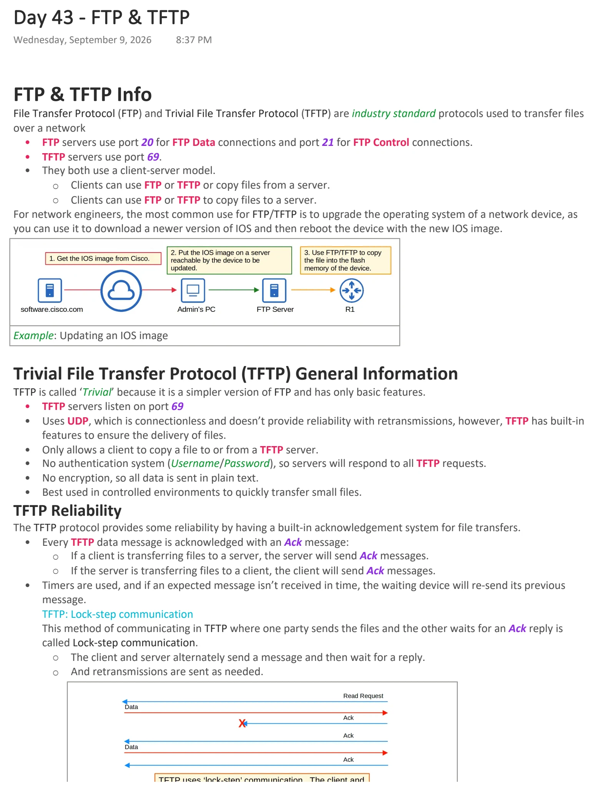
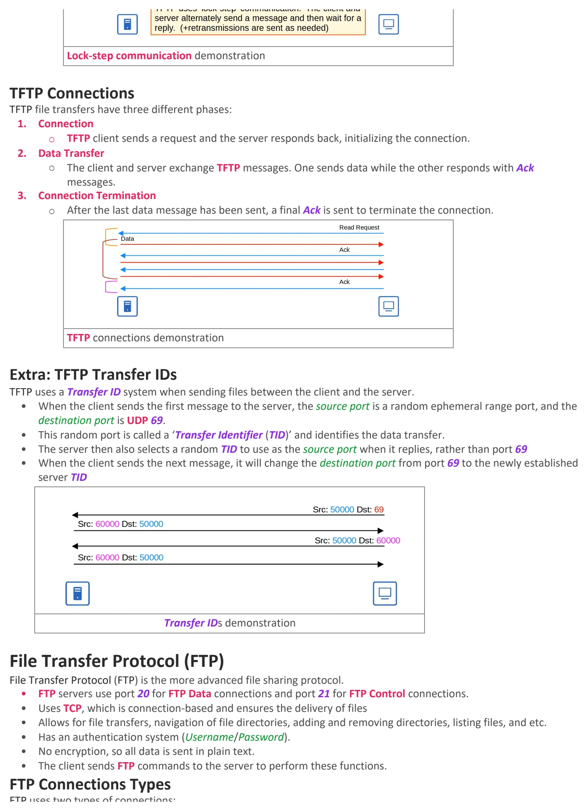
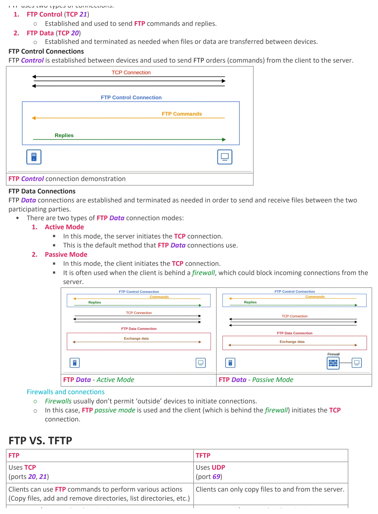
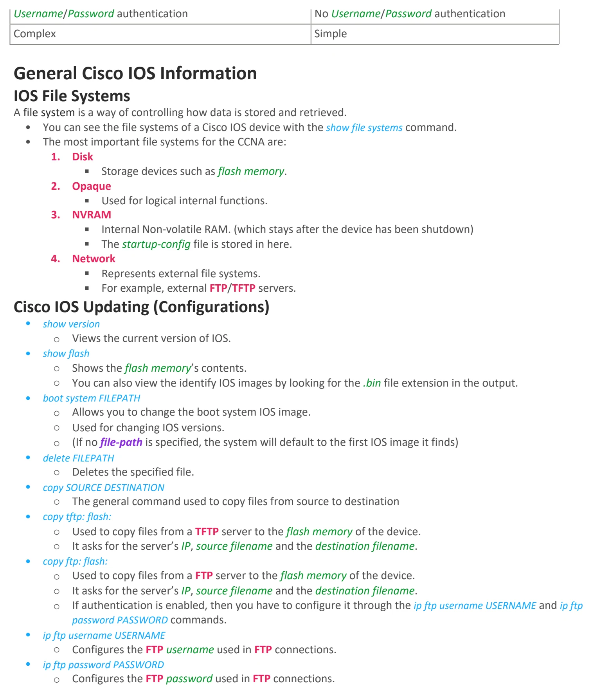

FTP & TFTP
Download original PDF



Text view — FTP & TFTP
Extracted from the original export. Diagrams and some formatting appear in the notes above.
Day 43 - FTP & TFTP Wednesday, September 9, 2026 8:37 PM FTP & TFTP Info File Transfer Protocol (FTP) and Trivial File Transfer Protocol (TFTP) are industry standard protocols used to transfer files over a network • FTP servers use port 20 for FTP Data connections and port 21 for FTP Control connections. • TFTP servers use port 69. • They both use a client-server model. ○ Clients can use FTP or TFTP or copy files from a server. ○ Clients can use FTP or TFTP to copy files to a server. For network engineers, the most common use for FTP/TFTP is to upgrade the operating system of a network device, as you can use it to download a newer version of IOS and then reboot the device with the new IOS image. Example: Updating an IOS image Trivial File Transfer Protocol (TFTP) General Information TFTP is called ‘Trivial’ because it is a simpler version of FTP and has only basic features. • TFTP servers listen on port 69 • Uses UDP, which is connectionless and doesn’t provide reliability with retransmissions, however, TFTP has built-in features to ensure the delivery of files. • Only allows a client to copy a file to or from a TFTP server. • No authentication system (Username/Password), so servers will respond to all TFTP requests. • No encryption, so all data is sent in plain text. • Best used in controlled environments to quickly transfer small files. TFTP Reliability The TFTP protocol provides some reliability by having a built-in acknowledgement system for file transfers. • Every TFTP data message is acknowledged with an Ack message: ○ If a client is transferring files to a server, the server will send Ack messages. ○ If the server is transferring files to a client, the client will send Ack messages. • Timers are used, and if an expected message isn’t received in time, the waiting device will re-send its previous message. TFTP: Lock-step communication This method of communicating in TFTP where one party sends the files and the other waits for an Ack reply is called Lock-step communication. ○ The client and server alternately send a message and then wait for a reply. ○ And retransmissions are sent as needed. Lock-step communication demonstration TFTP Connections TFTP file transfers have three different phases: 1. Connection ○ TFTP client sends a request and the server responds back, initializing the connection. 2. Data Transfer ○ The client and server exchange TFTP messages. One sends data while the other responds with Ack messages. 3. Connection Termination ○ After the last data message has been sent, a final Ack is sent to terminate the connection. TFTP connections demonstration Extra: TFTP Transfer IDs TFTP uses a Transfer ID system when sending files between the client and the server. • When the client sends the first message to the server, the source port is a random ephemeral range port, and the destination port is UDP 69. • This random port is called a ‘Transfer Identifier (TID)’ and identifies the data transfer. • The server then also selects a random TID to use as the source port when it replies, rather than port 69 • When the client sends the next message, it will change the destination port from port 69 to the newly established server TID Transfer IDs demonstration File Transfer Protocol (FTP) File Transfer Protocol (FTP) is the more advanced file sharing protocol. • FTP servers use port 20 for FTP Data connections and port 21 for FTP Control connections. • Uses TCP, which is connection-based and ensures the delivery of files • Allows for file transfers, navigation of file directories, adding and removing directories, listing files, and etc. • Has an authentication system (Username/Password). • No encryption, so all data is sent in plain text. • The client sends FTP commands to the server to perform these functions. FTP Connections Types FTP uses two types of connections: 1. FTP Control (TCP 21) ○ Established and used to send FTP commands and replies. 2. FTP Data (TCP 20) ○ Established and terminated as needed when files or data are transferred between devices. FTP Control Connections FTP Control is established between devices and used to send FTP orders (commands) from the client to the server. FTP Control connection demonstration FTP Data Connections FTP Data connections are established and terminated as needed in order to send and receive files between the two participating parties. • There are two types of FTP Data connection modes: 1. Active Mode § In this mode, the server initiates the TCP connection. § This is the default method that FTP Data connections use. 2. Passive Mode § In this mode, the client initiates the TCP connection. § It is often used when the client is behind a firewall, which could block incoming connections from the server. FTP Data - Active Mode FTP Data - Passive Mode Firewalls and connections ○ Firewalls usually don’t permit ‘outside’ devices to initiate connections. ○ In this case, FTP passive mode is used and the client (which is behind the firewall) initiates the TCP connection. FTP VS. TFTP FTP TFTP Uses TCP Uses UDP (ports 20, 21) (port 69) Clients can use FTP commands to perform various actions Clients can only copy files to and from the server. (Copy files, add and remove directories, list directories, etc.) Username/Password authentication No Username/Password authentication Complex Simple General Cisco IOS Information IOS File Systems A file system is a way of controlling how data is stored and retrieved. • You can see the file systems of a Cisco IOS device with the show file systems command. • The most important file systems for the CCNA are: 1. Disk § Storage devices such as flash memory. 2. Opaque § Used for logical internal functions. 3. NVRAM § Internal Non-volatile RAM. (which stays after the device has been shutdown) § The startup-config file is stored in here. 4. Network § Represents external file systems. § For example, external FTP/TFTP servers. Cisco IOS Updating (Configurations) • show version ○ Views the current version of IOS. • show flash ○ Shows the flash memory’s contents. ○ You can also view the identify IOS images by looking for the .bin file extension in the output. • boot system FILEPATH ○ Allows you to change the boot system IOS image. ○ Used for changing IOS versions. ○ (If no file-path is specified, the system will default to the first IOS image it finds) • delete FILEPATH ○ Deletes the specified file. • copy SOURCE DESTINATION ○ The general command used to copy files from source to destination • copy tftp: flash: ○ Used to copy files from a TFTP server to the flash memory of the device. ○ It asks for the server’s IP, source filename and the destination filename. • copy ftp: flash: ○ Used to copy files from a FTP server to the flash memory of the device. ○ It asks for the server’s IP, source filename and the destination filename. ○ If authentication is enabled, then you have to configure it through the ip ftp username USERNAME and ip ftp password PASSWORD commands. • ip ftp username USERNAME ○ Configures the FTP username used in FTP connections. • ip ftp password PASSWORD ○ Configures the FTP password used in FTP connections. Day 43 - FTP & TFTP Wednesday, September 9, 2026 8:37 PM FTP & TFTP Info File Transfer Protocol (FTP) and Trivial File Transfer Protocol (TFTP) are industry standard protocols used to transfer files over a network • FTP servers use port 20 for FTP Data connections and port 21 for FTP Control connections. • TFTP servers use port 69. • They both use a client-server model. ○ Clients can use FTP or TFTP or copy files from a server. ○ Clients can use FTP or TFTP to copy files to a server. For network engineers, the most common use for FTP/TFTP is to upgrade the operating system of a network device, as you can use it to download a newer version of IOS and then reboot the device with the new IOS image. Example: Updating an IOS image Trivial File Transfer Protocol (TFTP) General Information TFTP is called ‘Trivial’ because it is a simpler version of FTP and has only basic features. • TFTP servers listen on port 69 • Uses UDP, which is connectionless and doesn’t provide reliability with retransmissions, however, TFTP has built-in features to ensure the delivery of files. • Only allows a client to copy a file to or from a TFTP server. • No authentication system (Username/Password), so servers will respond to all TFTP requests. • No encryption, so all data is sent in plain text. • Best used in controlled environments to quickly transfer small files. TFTP Reliability The TFTP protocol provides some reliability by having a built-in acknowledgement system for file transfers. • Every TFTP data message is acknowledged with an Ack message: ○ If a client is transferring files to a server, the server will send Ack messages. ○ If the server is transferring files to a client, the client will send Ack messages. • Timers are used, and if an expected message isn’t received in time, the waiting device will re-send its previous message. TFTP: Lock-step communication This method of communicating in TFTP where one party sends the files and the other waits for an Ack reply is called Lock-step communication. ○ The client and server alternately send a message and then wait for a reply. ○ And retransmissions are sent as needed. Lock-step communication demonstration TFTP Connections TFTP file transfers have three different phases: 1. Connection ○ TFTP client sends a request and the server responds back, initializing the connection. 2. Data Transfer ○ The client and server exchange TFTP messages. One sends data while the other responds with Ack messages. 3. Connection Termination ○ After the last data message has been sent, a final Ack is sent to terminate the connection. TFTP connections demonstration Extra: TFTP Transfer IDs TFTP uses a Transfer ID system when sending files between the client and the server. • When the client sends the first message to the server, the source port is a random ephemeral range port, and the destination port is UDP 69. • This random port is called a ‘Transfer Identifier (TID)’ and identifies the data transfer. • The server then also selects a random TID to use as the source port when it replies, rather than port 69 • When the client sends the next message, it will change the destination port from port 69 to the newly established server TID Transfer IDs demonstration File Transfer Protocol (FTP) File Transfer Protocol (FTP) is the more advanced file sharing protocol. • FTP servers use port 20 for FTP Data connections and port 21 for FTP Control connections. • Uses TCP, which is connection-based and ensures the delivery of files • Allows for file transfers, navigation of file directories, adding and removing directories, listing files, and etc. • Has an authentication system (Username/Password). • No encryption, so all data is sent in plain text. • The client sends FTP commands to the server to perform these functions. FTP Connections Types FTP uses two types of connections: 1. FTP Control (TCP 21) ○ Established and used to send FTP commands and replies. 2. FTP Data (TCP 20) ○ Established and terminated as needed when files or data are transferred between devices. FTP Control Connections FTP Control is established between devices and used to send FTP orders (commands) from the client to the server. FTP Control connection demonstration FTP Data Connections FTP Data connections are established and terminated as needed in order to send and receive files between the two participating parties. • There are two types of FTP Data connection modes: 1. Active Mode § In this mode, the server initiates the TCP connection. § This is the default method that FTP Data connections use. 2. Passive Mode § In this mode, the client initiates the TCP connection. § It is often used when the client is behind a firewall, which could block incoming connections from the server. FTP Data - Active Mode FTP Data - Passive Mode Firewalls and connections ○ Firewalls usually don’t permit ‘outside’ devices to initiate connections. ○ In this case, FTP passive mode is used and the client (which is behind the firewall) initiates the TCP connection. FTP VS. TFTP FTP TFTP Uses TCP Uses UDP (ports 20, 21) (port 69) Clients can use FTP commands to perform various actions Clients can only copy files to and from the server. (Copy files, add and remove directories, list directories, etc.) Username/Password authentication No Username/Password authentication Complex Simple General Cisco IOS Information IOS File Systems A file system is a way of controlling how data is stored and retrieved. • You can see the file systems of a Cisco IOS device with the show file systems command. • The most important file systems for the CCNA are: 1. Disk § Storage devices such as flash memory. 2. Opaque § Used for logical internal functions. 3. NVRAM § Internal Non-volatile RAM. (which stays after the device has been shutdown) § The startup-config file is stored in here. 4. Network § Represents external file systems. § For example, external FTP/TFTP servers. Cisco IOS Updating (Configurations) • show version ○ Views the current version of IOS. • show flash ○ Shows the flash memory’s contents. ○ You can also view the identify IOS images by looking for the .bin file extension in the output. • boot system FILEPATH ○ Allows you to change the boot system IOS image. ○ Used for changing IOS versions. ○ (If no file-path is specified, the system will default to the first IOS image it finds) • delete FILEPATH ○ Deletes the specified file. • copy SOURCE DESTINATION ○ The general command used to copy files from source to destination • copy tftp: flash: ○ Used to copy files from a TFTP server to the flash memory of the device. ○ It asks for the server’s IP, source filename and the destination filename. • copy ftp: flash: ○ Used to copy files from a FTP server to the flash memory of the device. ○ It asks for the server’s IP, source filename and the destination filename. ○ If authentication is enabled, then you have to configure it through the ip ftp username USERNAME and ip ftp password PASSWORD commands. • ip ftp username USERNAME ○ Configures the FTP username used in FTP connections. • ip ftp password PASSWORD ○ Configures the FTP password used in FTP connections. Day 43 - FTP & TFTP Wednesday, September 9, 2026 8:37 PM FTP & TFTP Info File Transfer Protocol (FTP) and Trivial File Transfer Protocol (TFTP) are industry standard protocols used to transfer files over a network • FTP servers use port 20 for FTP Data connections and port 21 for FTP Control connections. • TFTP servers use port 69. • They both use a client-server model. ○ Clients can use FTP or TFTP or copy files from a server. ○ Clients can use FTP or TFTP to copy files to a server. For network engineers, the most common use for FTP/TFTP is to upgrade the operating system of a network device, as you can use it to download a newer version of IOS and then reboot the device with the new IOS image. Example: Updating an IOS image Trivial File Transfer Protocol (TFTP) General Information TFTP is called ‘Trivial’ because it is a simpler version of FTP and has only basic features. • TFTP servers listen on port 69 • Uses UDP, which is connectionless and doesn’t provide reliability with retransmissions, however, TFTP has built-in features to ensure the delivery of files. • Only allows a client to copy a file to or from a TFTP server. • No authentication system (Username/Password), so servers will respond to all TFTP requests. • No encryption, so all data is sent in plain text. • Best used in controlled environments to quickly transfer small files. TFTP Reliability The TFTP protocol provides some reliability by having a built-in acknowledgement system for file transfers. • Every TFTP data message is acknowledged with an Ack message: ○ If a client is transferring files to a server, the server will send Ack messages. ○ If the server is transferring files to a client, the client will send Ack messages. • Timers are used, and if an expected message isn’t received in time, the waiting device will re-send its previous message. TFTP: Lock-step communication This method of communicating in TFTP where one party sends the files and the other waits for an Ack reply is called Lock-step communication. ○ The client and server alternately send a message and then wait for a reply. ○ And retransmissions are sent as needed. Lock-step communication demonstration TFTP Connections TFTP file transfers have three different phases: 1. Connection ○ TFTP client sends a request and the server responds back, initializing the connection. 2. Data Transfer ○ The client and server exchange TFTP messages. One sends data while the other responds with Ack messages. 3. Connection Termination ○ After the last data message has been sent, a final Ack is sent to terminate the connection. TFTP connections demonstration Extra: TFTP Transfer IDs TFTP uses a Transfer ID system when sending files between the client and the server. • When the client sends the first message to the server, the source port is a random ephemeral range port, and the destination port is UDP 69. • This random port is called a ‘Transfer Identifier (TID)’ and identifies the data transfer. • The server then also selects a random TID to use as the source port when it replies, rather than port 69 • When the client sends the next message, it will change the destination port from port 69 to the newly established server TID Transfer IDs demonstration File Transfer Protocol (FTP) File Transfer Protocol (FTP) is the more advanced file sharing protocol. • FTP servers use port 20 for FTP Data connections and port 21 for FTP Control connections. • Uses TCP, which is connection-based and ensures the delivery of files • Allows for file transfers, navigation of file directories, adding and removing directories, listing files, and etc. • Has an authentication system (Username/Password). • No encryption, so all data is sent in plain text. • The client sends FTP commands to the server to perform these functions. FTP Connections Types FTP uses two types of connections: 1. FTP Control (TCP 21) ○ Established and used to send FTP commands and replies. 2. FTP Data (TCP 20) ○ Established and terminated as needed when files or data are transferred between devices. FTP Control Connections FTP Control is established between devices and used to send FTP orders (commands) from the client to the server. FTP Control connection demonstration FTP Data Connections FTP Data connections are established and terminated as needed in order to send and receive files between the two participating parties. • There are two types of FTP Data connection modes: 1. Active Mode § In this mode, the server initiates the TCP connection. § This is the default method that FTP Data connections use. 2. Passive Mode § In this mode, the client initiates the TCP connection. § It is often used when the client is behind a firewall, which could block incoming connections from the server. FTP Data - Active Mode FTP Data - Passive Mode Firewalls and connections ○ Firewalls usually don’t permit ‘outside’ devices to initiate connections. ○ In this case, FTP passive mode is used and the client (which is behind the firewall) initiates the TCP connection. FTP VS. TFTP FTP TFTP Uses TCP Uses UDP (ports 20, 21) (port 69) Clients can use FTP commands to perform various actions Clients can only copy files to and from the server. (Copy files, add and remove directories, list directories, etc.) Username/Password authentication No Username/Password authentication Complex Simple General Cisco IOS Information IOS File Systems A file system is a way of controlling how data is stored and retrieved. • You can see the file systems of a Cisco IOS device with the show file systems command. • The most important file systems for the CCNA are: 1. Disk § Storage devices such as flash memory. 2. Opaque § Used for logical internal functions. 3. NVRAM § Internal Non-volatile RAM. (which stays after the device has been shutdown) § The startup-config file is stored in here. 4. Network § Represents external file systems. § For example, external FTP/TFTP servers. Cisco IOS Updating (Configurations) • show version ○ Views the current version of IOS. • show flash ○ Shows the flash memory’s contents. ○ You can also view the identify IOS images by looking for the .bin file extension in the output. • boot system FILEPATH ○ Allows you to change the boot system IOS image. ○ Used for changing IOS versions. ○ (If no file-path is specified, the system will default to the first IOS image it finds) • delete FILEPATH ○ Deletes the specified file. • copy SOURCE DESTINATION ○ The general command used to copy files from source to destination • copy tftp: flash: ○ Used to copy files from a TFTP server to the flash memory of the device. ○ It asks for the server’s IP, source filename and the destination filename. • copy ftp: flash: ○ Used to copy files from a FTP server to the flash memory of the device. ○ It asks for the server’s IP, source filename and the destination filename. ○ If authentication is enabled, then you have to configure it through the ip ftp username USERNAME and ip ftp password PASSWORD commands. • ip ftp username USERNAME ○ Configures the FTP username used in FTP connections. • ip ftp password PASSWORD ○ Configures the FTP password used in FTP connections. Day 43 - FTP & TFTP Wednesday, September 9, 2026 8:37 PM FTP & TFTP Info File Transfer Protocol (FTP) and Trivial File Transfer Protocol (TFTP) are industry standard protocols used to transfer files over a network • FTP servers use port 20 for FTP Data connections and port 21 for FTP Control connections. • TFTP servers use port 69. • They both use a client-server model. ○ Clients can use FTP or TFTP or copy files from a server. ○ Clients can use FTP or TFTP to copy files to a server. For network engineers, the most common use for FTP/TFTP is to upgrade the operating system of a network device, as you can use it to download a newer version of IOS and then reboot the device with the new IOS image. Example: Updating an IOS image Trivial File Transfer Protocol (TFTP) General Information TFTP is called ‘Trivial’ because it is a simpler version of FTP and has only basic features. • TFTP servers listen on port 69 • Uses UDP, which is connectionless and doesn’t provide reliability with retransmissions, however, TFTP has built-in features to ensure the delivery of files. • Only allows a client to copy a file to or from a TFTP server. • No authentication system (Username/Password), so servers will respond to all TFTP requests. • No encryption, so all data is sent in plain text. • Best used in controlled environments to quickly transfer small files. TFTP Reliability The TFTP protocol provides some reliability by having a built-in acknowledgement system for file transfers. • Every TFTP data message is acknowledged with an Ack message: ○ If a client is transferring files to a server, the server will send Ack messages. ○ If the server is transferring files to a client, the client will send Ack messages. • Timers are used, and if an expected message isn’t received in time, the waiting device will re-send its previous message. TFTP: Lock-step communication This method of communicating in TFTP where one party sends the files and the other waits for an Ack reply is called Lock-step communication. ○ The client and server alternately send a message and then wait for a reply. ○ And retransmissions are sent as needed. Lock-step communication demonstration TFTP Connections TFTP file transfers have three different phases: 1. Connection ○ TFTP client sends a request and the server responds back, initializing the connection. 2. Data Transfer ○ The client and server exchange TFTP messages. One sends data while the other responds with Ack messages. 3. Connection Termination ○ After the last data message has been sent, a final Ack is sent to terminate the connection. TFTP connections demonstration Extra: TFTP Transfer IDs TFTP uses a Transfer ID system when sending files between the client and the server. • When the client sends the first message to the server, the source port is a random ephemeral range port, and the destination port is UDP 69. • This random port is called a ‘Transfer Identifier (TID)’ and identifies the data transfer. • The server then also selects a random TID to use as the source port when it replies, rather than port 69 • When the client sends the next message, it will change the destination port from port 69 to the newly established server TID Transfer IDs demonstration File Transfer Protocol (FTP) File Transfer Protocol (FTP) is the more advanced file sharing protocol. • FTP servers use port 20 for FTP Data connections and port 21 for FTP Control connections. • Uses TCP, which is connection-based and ensures the delivery of files • Allows for file transfers, navigation of file directories, adding and removing directories, listing files, and etc. • Has an authentication system (Username/Password). • No encryption, so all data is sent in plain text. • The client sends FTP commands to the server to perform these functions. FTP Connections Types FTP uses two types of connections: 1. FTP Control (TCP 21) ○ Established and used to send FTP commands and replies. 2. FTP Data (TCP 20) ○ Established and terminated as needed when files or data are transferred between devices. FTP Control Connections FTP Control is established between devices and used to send FTP orders (commands) from the client to the server. FTP Control connection demonstration FTP Data Connections FTP Data connections are established and terminated as needed in order to send and receive files between the two participating parties. • There are two types of FTP Data connection modes: 1. Active Mode § In this mode, the server initiates the TCP connection. § This is the default method that FTP Data connections use. 2. Passive Mode § In this mode, the client initiates the TCP connection. § It is often used when the client is behind a firewall, which could block incoming connections from the server. FTP Data - Active Mode FTP Data - Passive Mode Firewalls and connections ○ Firewalls usually don’t permit ‘outside’ devices to initiate connections. ○ In this case, FTP passive mode is used and the client (which is behind the firewall) initiates the TCP connection. FTP VS. TFTP FTP TFTP Uses TCP Uses UDP (ports 20, 21) (port 69) Clients can use FTP commands to perform various actions Clients can only copy files to and from the server. (Copy files, add and remove directories, list directories, etc.) Username/Password authentication No Username/Password authentication Complex Simple General Cisco IOS Information IOS File Systems A file system is a way of controlling how data is stored and retrieved. • You can see the file systems of a Cisco IOS device with the show file systems command. • The most important file systems for the CCNA are: 1. Disk § Storage devices such as flash memory. 2. Opaque § Used for logical internal functions. 3. NVRAM § Internal Non-volatile RAM. (which stays after the device has been shutdown) § The startup-config file is stored in here. 4. Network § Represents external file systems. § For example, external FTP/TFTP servers. Cisco IOS Updating (Configurations) • show version ○ Views the current version of IOS. • show flash ○ Shows the flash memory’s contents. ○ You can also view the identify IOS images by looking for the .bin file extension in the output. • boot system FILEPATH ○ Allows you to change the boot system IOS image. ○ Used for changing IOS versions. ○ (If no file-path is specified, the system will default to the first IOS image it finds) • delete FILEPATH ○ Deletes the specified file. • copy SOURCE DESTINATION ○ The general command used to copy files from source to destination • copy tftp: flash: ○ Used to copy files from a TFTP server to the flash memory of the device. ○ It asks for the server’s IP, source filename and the destination filename. • copy ftp: flash: ○ Used to copy files from a FTP server to the flash memory of the device. ○ It asks for the server’s IP, source filename and the destination filename. ○ If authentication is enabled, then you have to configure it through the ip ftp username USERNAME and ip ftp password PASSWORD commands. • ip ftp username USERNAME ○ Configures the FTP username used in FTP connections. • ip ftp password PASSWORD ○ Configures the FTP password used in FTP connections.